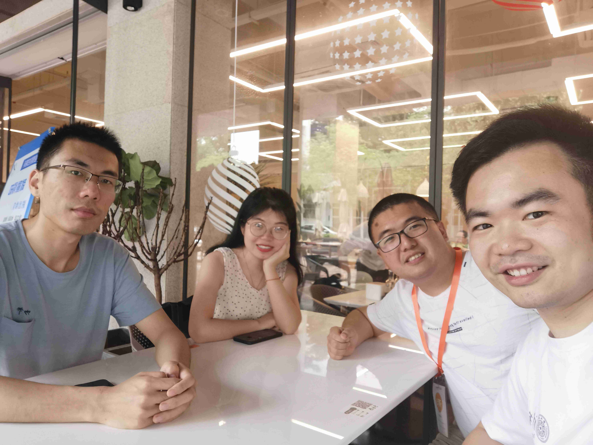

Going out
2020/5/22
It is hard to go out of the campus in recent days. I have to find some obscure way along the Dasha River. Still, the field workers stop me when I come back. They warn that I can't do such thing any more.
Reunion
2020/5/26
Reunion with partial members of 2018 summer volunteer teaching students since Shaoping is going to leave the campus tomorrow. 
Climbing
2020/7/15
This is the second time I went to TangLang Mountain with my roommate, Pengyang Zhao. Usually I went climbing once a time every weak.
Poem
2020/7/16
When I went to iPark this morning, a poem flowed to my mind:
曾幻年来事非空 笔底飞鸿已无踪 春风杨柳花开日 粉面桃花人不同